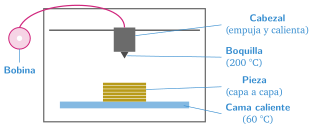
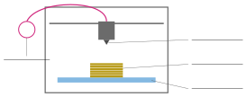

Cómo funciona una impresora 3D
🤔 Pienso5 min
Qué hago aquí: Piensa un momento y contesta con lo que ya sabes. No pasa nada si no lo sabes: es para empezar.
Tienes que hacer una maqueta de una montaña con láminas de cartón. ¿Cómo lo harías?
✏️ Puedes responder escribiendo, con un dibujo o un esquema, o contándolo en voz alta.
📖 Leo y aprendo15 min
Qué hago aquí: Lee despacio, mira los dibujos y los ejemplos, y quédate con la idea clave del final.
Una sierra o una lija quitan material. La impresora 3D hace lo contrario: añade material.
Hay dos tipos de impresora 3D:
- De filamento: derrite un hilo de plástico y lo va dejando en capas. Es la del aula. El plástico más usado es el PLA, que se hace con maíz.
- De resina: una luz endurece un líquido capa a capa. Hace piezas con mucho detalle, pero la resina es tóxica: hay que usar guantes.

✏️ Hago25 min
Qué hago aquí: Haz las actividades en orden. Empieza siempre por las básicas.
Completa: la impresora 3D fabrica la pieza a , de abajo arriba.
Escribe el nombre de cada parte en el dibujo: bobina, boquilla, cama, pieza.

Escribe F (filamento) o R (resina).
- Derrite un hilo de plástico:
- Una luz endurece un líquido:
- Es la impresora del aula:
- Hay que usar guantes:
Observa la impresora del aula. Señala con el dedo a un compañero la bobina, la boquilla y la cama. Marca cuando lo hayáis hecho:
Una pieza mide 30 mm de alto. Cada capa mide 0,2 mm. ¿Cuántas capas tiene?
🚀 Amplío (si quieres saber más)
Qué hago aquí: ¿Has terminado? Lee la curiosidad o elige el reto. Es voluntario.
Si las capas midieran 0,1 mm, ¿cuántas capas tendría la pieza de 30 mm? ¿Tardaría más o menos en imprimirse? ¿Por qué?
✅ Compruebo5 min
Qué hago aquí: Contesta sin mirar la ficha y marca cómo lo llevas.